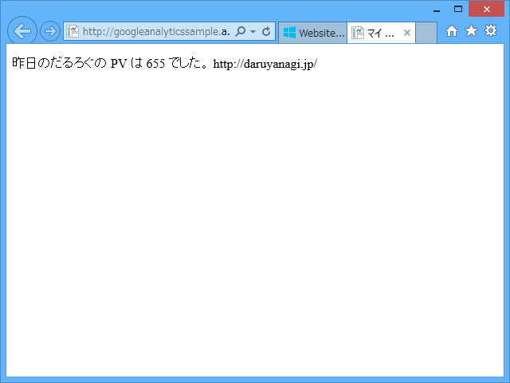
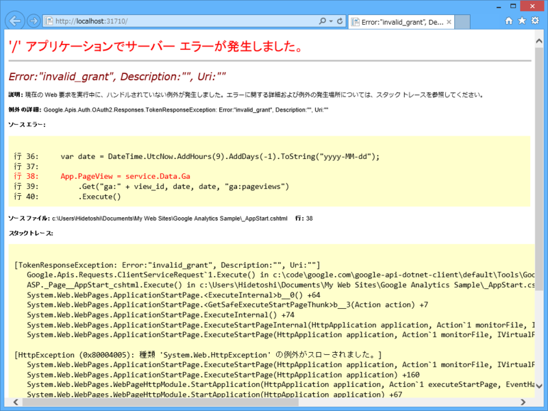
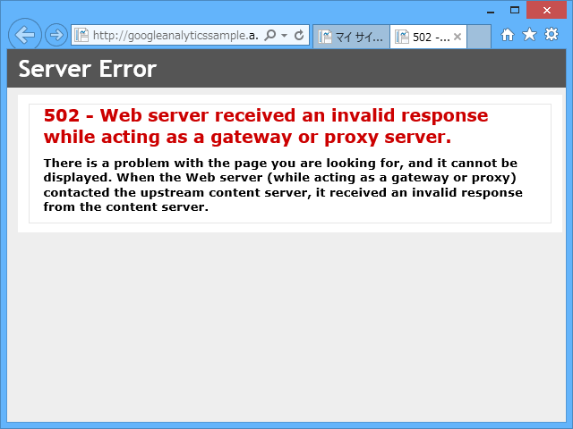
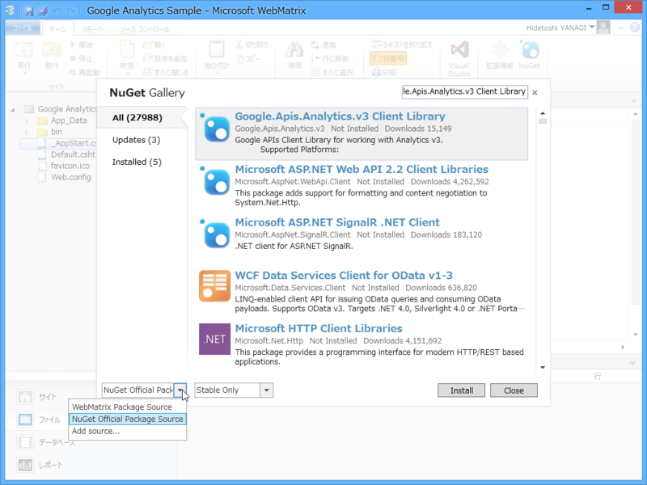

WebMatrix： Google Analytics API を使って前日の PV を取得するコードを C# で書いてみた
公開日：

Google Analytics API を使って前日の PV を取得するコードを C# で書いてみた - しばやん雑記 を WebMatrix でやってみた。とりあえず、前日の PV を表示するとことまで。
つまづいたところその一

'/' アプリケーションでサーバー エラーが発生しました。
Error:"invalid_grant", Description:"", Uri:""
パラメーターが間違っていたりすると、認証エラーが出る。自分の場合は、PC の時刻が狂っていた。ちゃんと合わせておきましょう。
つまづいたところその二

502 - Web server received an invalid response while acting as a gateway or proxy server.
There is a problem with the page you are looking for, and it cannot be displayed. When the Web server (while acting as a gateway or proxy) contacted the upstream content server, it received an invalid response from the content server.
ローカルではちゃんと動くのに、Windows Azure に置くと 502 エラーが出る。
var certificate = new X509Certificate2( HttpContext.Current.Server.MapPath(key), "notasecret", X509KeyStorageFlags.Exportable );
この部分を、以下のように修正。
var certificate = new X509Certificate2( HttpContext.Current.Server.MapPath(key), "notasecret", X509KeyStorageFlags.Exportable | X509KeyStorageFlags.MachineKeySet );
StackOverflow さまさまやでぇ。
つまづいたところその三

そもそもレポジトリのソースを変えないと NuGet Gallery | Google.Apis.Analytics.v3 1.38.0.1306 が出てこない感じ。
で、やっとこさ検索しても、肝心の NuGet パッケージがインストールできねえ……NuGet Package Manager のバージョンが古いからみたいだけど、結局 Visual Studio にスイッチして NuGet をバージョンアップしたりごにょごにょして解決。
結局こんな感じになった。
# ~/_App_Start.cshtml@using System.Security.Cryptography.X509Certificates @using Google.Apis.Auth.OAuth2 @using Google.Apis.Analytics.v3 @using Google.Apis.Services
@{ var key = @"~/API Project-.p12"; var mail = @"@developer.gserviceaccount.com"; var app_name = "sample app"; var view_id = "***";
var certificate = new X509Certificate2( HttpContext.Current.Server.MapPath(key), "notasecret", X509KeyStorageFlags.Exportable | X509KeyStorageFlags.MachineKeySet );
var credential = new ServiceAccountCredential( new ServiceAccountCredential.Initializer(mail) { Scopes = new[] { AnalyticsService.Scope.Analytics, AnalyticsService.Scope.AnalyticsReadonly } }.FromCertificate(certificate) );
var service = new AnalyticsService(new BaseClientService.Initializer { HttpClientInitializer = credential, ApplicationName = app_name, });
// Azure は UTC なので +9 時間して -1 日 var date = DateTime.UtcNow.AddHours(9).AddDays(-1).ToString("yyyy-MM-dd");
App.PageView = service.Data.Ga .Get("ga:" + view_id, date, date, "ga:pageviews") .Execute() .Rows[0][0]; }
（別に ~/_AppStart.cshtml に書く必要はないけど、成り行きで何となくそうしてしまった）
# Default.cshtml
@{
}
<!DOCTYPE html>
<html lang="ja">
<head>
<meta http-equiv="Content-Type" content="text/html; charset=utf-8"/>
<meta charset="utf-8" />
<title>マイ サイトのタイトル</title>
<link href="~/favicon.ico" rel="shortcut icon" type="image/x-icon" />
</head>
<body>
<p>昨日のだるろぐの PV は @App.PageView でした。 https://blog.daruyanagi.jp/</p>
</body>
</html>ほとんどしばやんのコードのまるパクリになったので、こんど万世のローストビーフでもおごってあげようと思った。